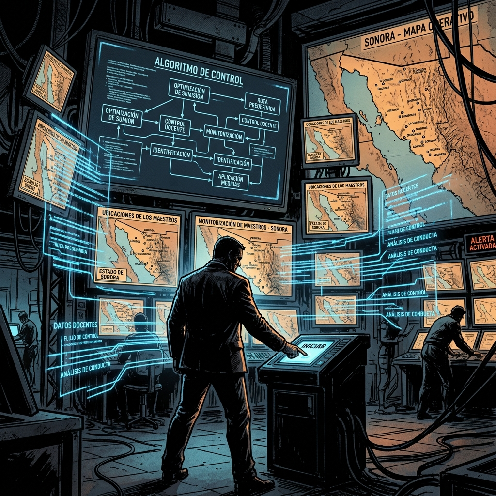
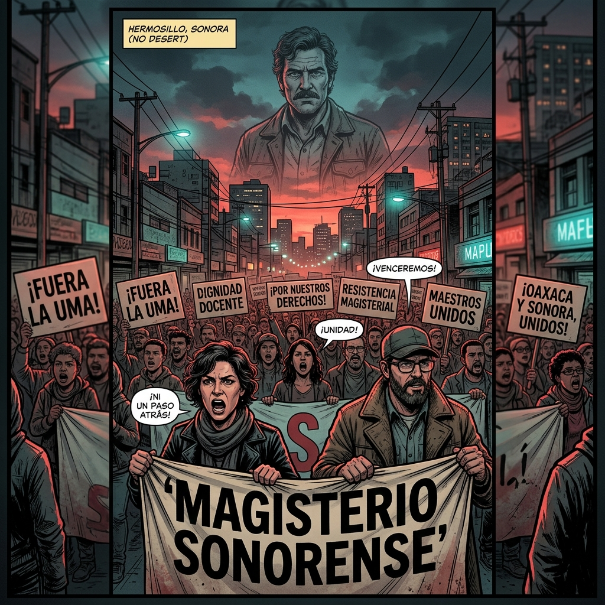
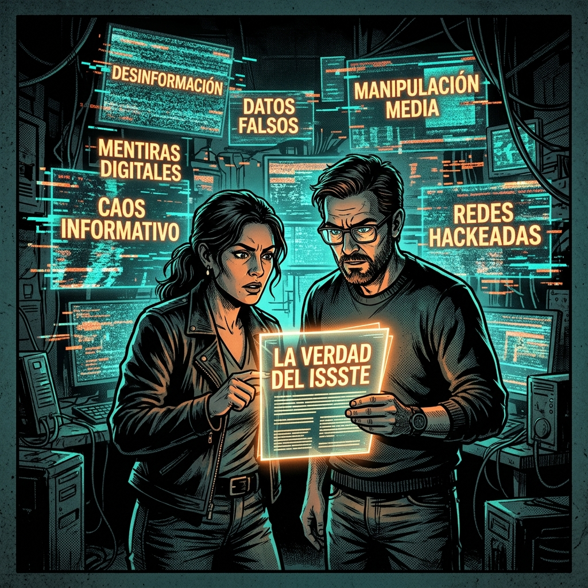
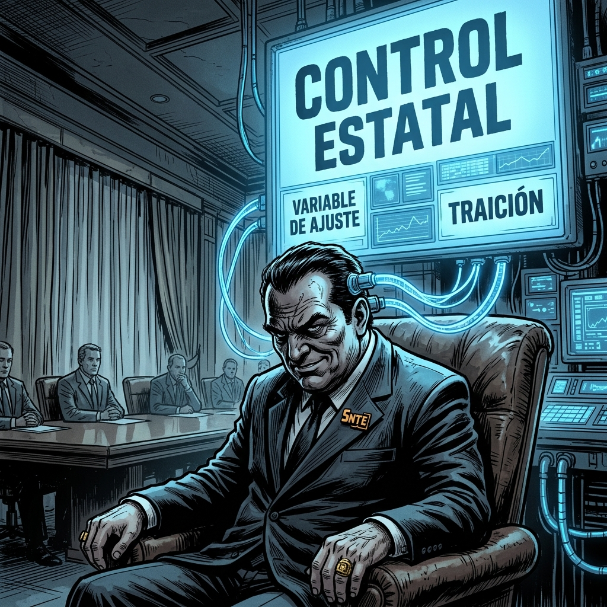
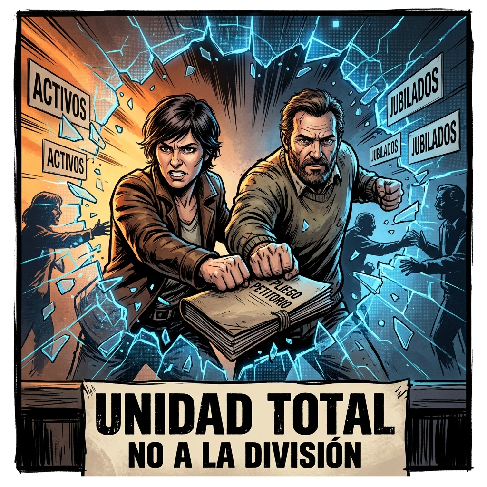
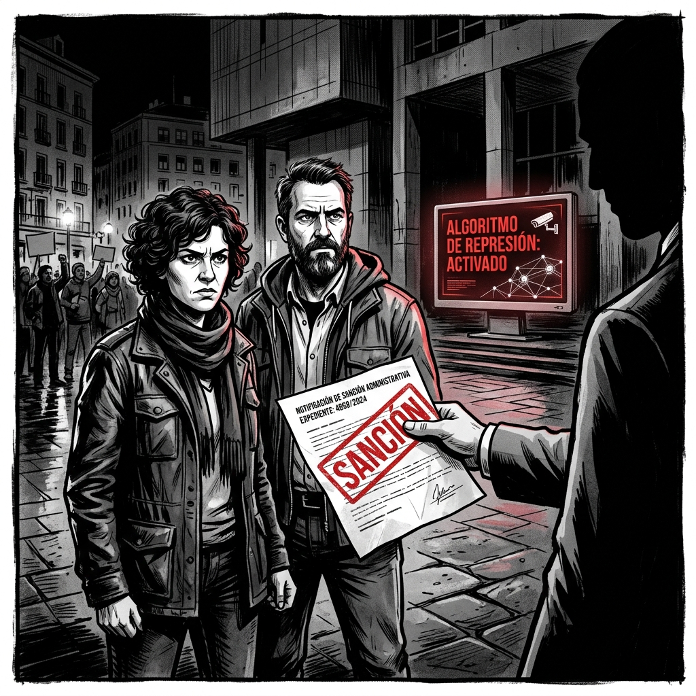
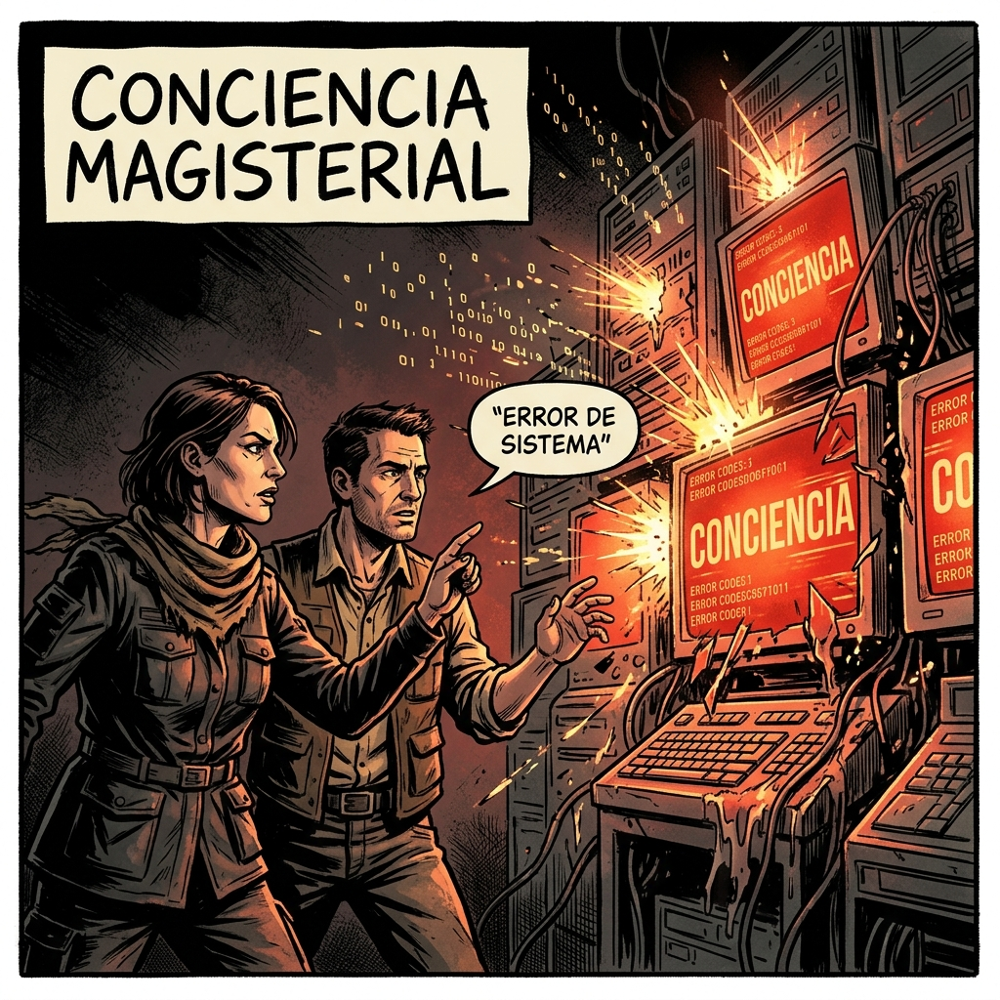
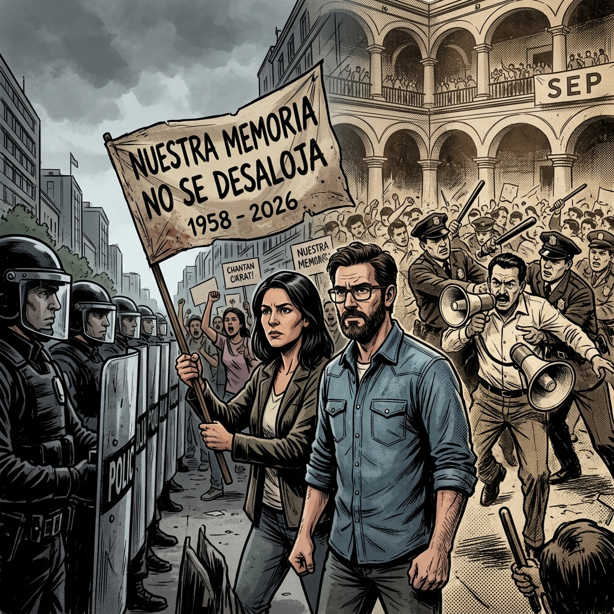
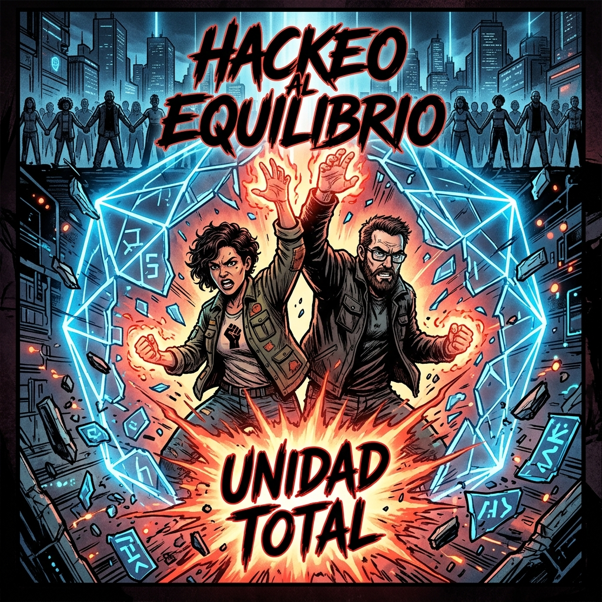
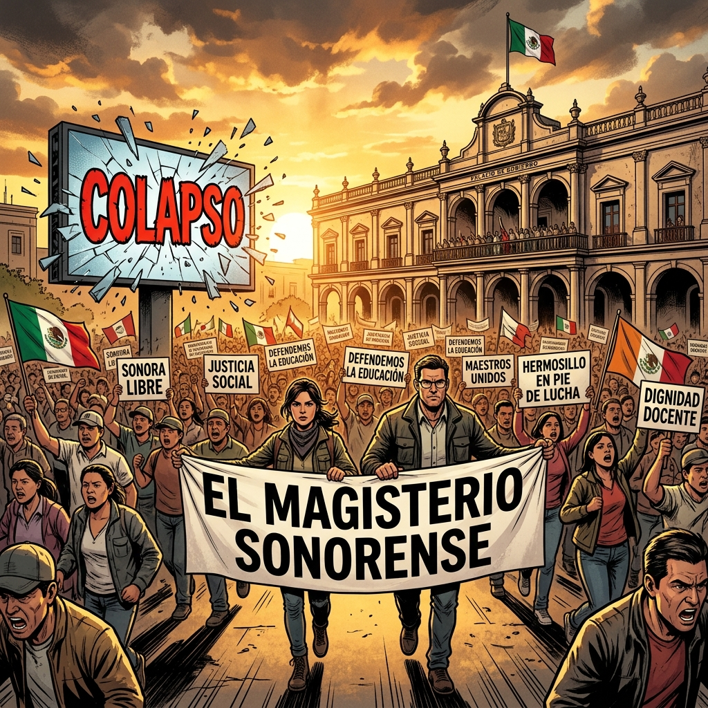

La Revolución del Magisterio y el Algoritmo Político
"El enfrentamiento final entre la ingeniería social del Estado y la memoria histórica de las bases educadoras."

La Ruta de Optimización
"Ellos creen que el azar decide nuestro destino. Pero el Estado no juega a los dados; juega a la Programación Dinámica."

La Montaña Roja
"El algoritmo tiene un punto ciego: la Memoria Histórica. Reclamamos la herencia de dignidad de Othón Salazar para Sonora."

Asimetría Informativa
"Ganan cuando saben todo de nosotros y nosotros no sabemos nada de ellos. Romper la asimetría es el primer paso de la revolución."

El Charrismo Algorítmico
"El sindicato ya no es un líder, es un cortafuegos digital. Una variable de ajuste para filtrar nuestras demandas genuinas."

Dilema del Prisionero
"Nos segmentan para que la cooperación parezca arriesgada. Pero nuestra fuerza es indivisible: activos y jubilados en un solo frente."

Tit for Tat
"A cada protesta responden con una sanción. Es su lógica de castigo inmediato, diseñada para condicionar nuestra obediencia a través del miedo."

Error del Sistema
"La conciencia no es programable. Cuando el maestro genera su propia información, el algoritmo del Estado entra en conflicto."

1958 vs 2026
"Los rostros del poder cambian, pero su represión es la misma. De Díaz Ordaz a hoy, la respuesta siempre es el garrote ante la razón educadora."

Hackeo al Equilibrio
"Ya no es óptimo quedarse callado. El nuevo equilibrio es la Acción Colectiva Sincronizada que rompe su casino de ignorancia."

Revolución Sincronizada
"¡Jaque Mate al Olvido! El algoritmo ha colapsado. La verdad del magisterio en movimiento clausura para siempre la Fábrica de Ignorancia."
MAGISTERIO SONORENSE
"La historia no se escribe con algoritmos, se escribe con la dignidad de quien educa."
VOLVER AL INICIO